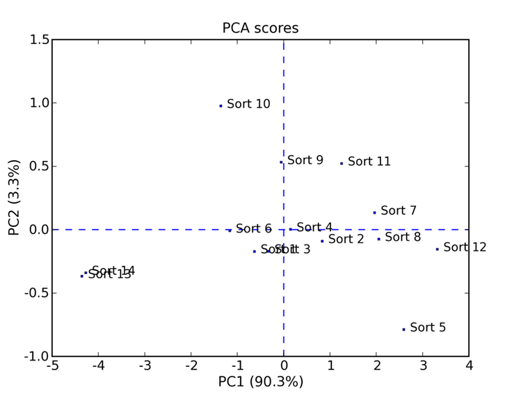
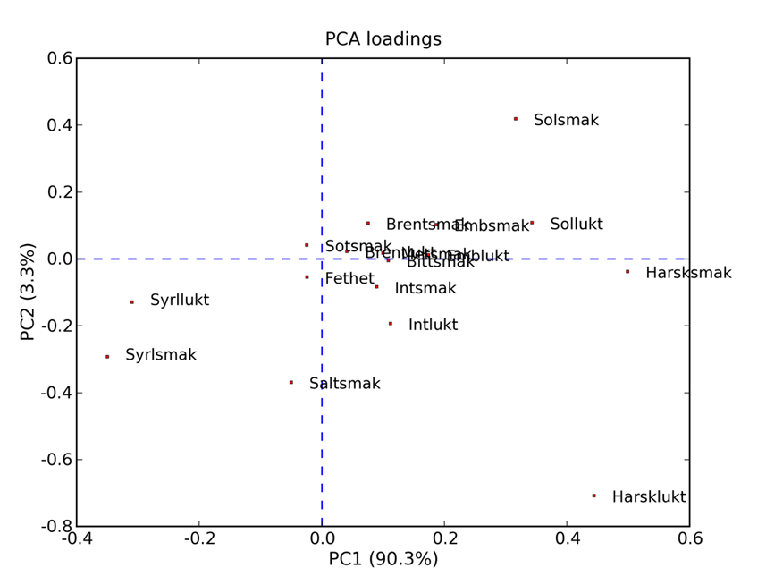
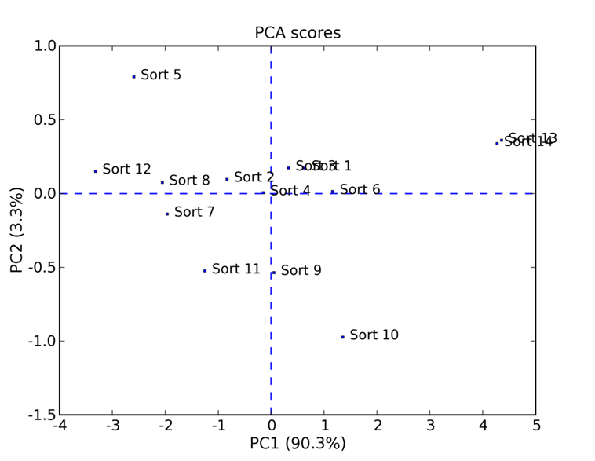
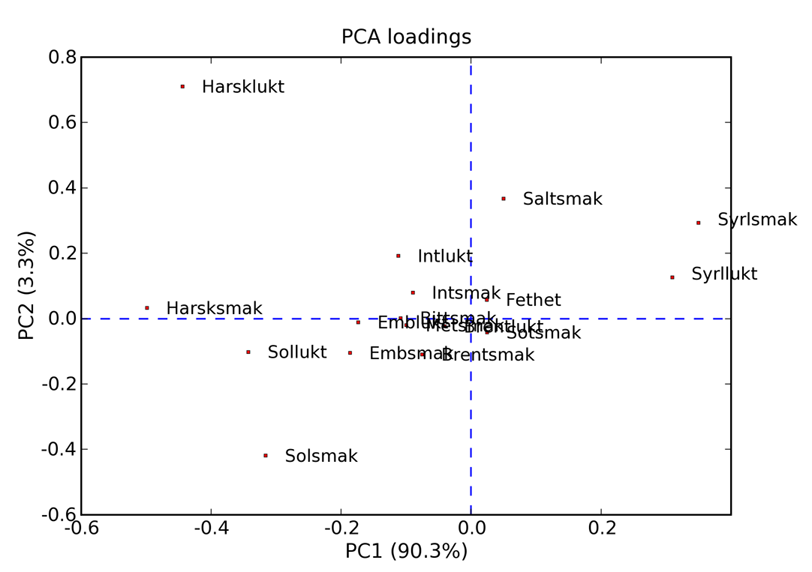

Plotted results:Here I have plotted results of the cheese data set described in pca_nipals.pdf in the doc folder. Each sample shown in the PCA score plot below represents a cheese sample that was stored under certain conditions. The variables are various flavours and odours for a cheese. I used a package for Python called matplotlib to make the plots. I have plotted Scores and Loadings directly, with PC1 as the horizontal axis and PC2 as the vertical axis. PCA-Scores (NIPALS):PCA-Loadings (NIPALS):As mentioned in pca_nipals.pdf, the first few PCs have the most explained variance. In fact, here PC1 has more than 90% explained variance. This indicates that almost all variance in the data is explained by PC1 alone. So when we are looking at these plots, we can mostly read of the horizontal axis (PC1). The variation explained by the remaining PCs is very low and might even represent only noise. As data matrix X here I have used an averaged Cheese data set. This data matrix can also be found in the testing.py file. An interesting thing we can see of these plots, is that Syrllukt and Syrlsmak lies far to the left and Harsklukt and Harsksmak lies far out to the right (on the PC1 axis). We can see these variables in the Loadings plot. Syrllukt and Syrlsmak is the acidic odour and flavour of a cheese (a sign of freshness), while Harsklukt and Harsksmak is the rancidity flavour and odour of a cheese (not good!). As we compare the two plots, this can give us the conclusion that there were something bad about the storage conditions in sample Sort 12, and something went right for Sort 13 and 14. Already, this has been a short example of exploratory data analysis. The following plots are just to demonstrate a difference between NIPALS and SVD. As you can see NIPALS Scores and Loadings (of my implementation) are rotated 180 degrees compared to SVD. But when it comes to using PCA, this does not matter. Because there is actually no difference in the results. The fact that the samples are rotated does not influence the analysis results, as we are interested how the samples in the PCA score plot and the variables in the PCA loadings plot relate to each other. PCA-Scores (SVD):PCA-Loadings (SVD): |